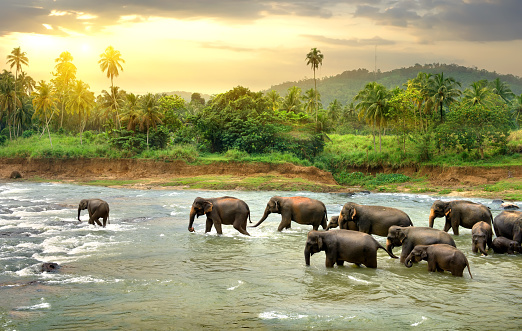

We dream of a day when peple and elephants can live harmoniously
Out of the 27,000 Asian elephants in India, only an estimated 1,000 of them are bull elephants,
causing gender disparity.
A shrinking gene pool poses a serious threat to long-term species survival.
Bulls with tusks are
poached for ivory, as female Asian elephants do not have tusks.
In recent years, more and more tuskless bulls have been documented, potentially because they escape
the poachers, with a better chance of survival.
Asian elephants are a keystone species and “gardeners of the planet.” They consume some 150-200
varieties of berries, bark, leaves, roots, and foliage.
They wander across vast areas of forest for 16-18 hours a day, dispersing seeds in their dung (some
250 pounds per elephant per day). Seeds become trees.
Trees give us oxygen to breathe, while
absorbing carbon dioxide, acting as natural air purifiers and playing a key role in the evaporative
cycle that provides rainwater to drink and replenishes natural aquifers.
Asian elephants could also be considered agents that mitigate air pollution.
Here's how… nations have borders, but lakes, rivers and the atmosphere are borderless, and pollution
drifts across the open sink. As noted above, trees play a vital role in trapping carbon dioxide, and
elephants propagate trees.
Furthermore, given that Asian elephants are the second-largest living land mammal (African elephants
being the largest), they have the power and dexterity to trample across forests and create pathways that
lead to waterholes and fodder, helping other animals to sustain themselves. Clearly elephants are necessary for
the survival of forest ecosystems, and indeed many creatures.Citeste mai mult despre elefanti!
